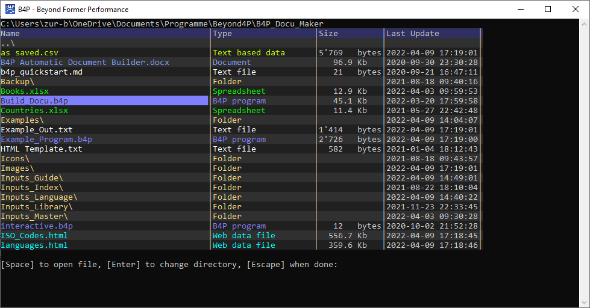

Introduction
The B4P function dir() is available to inspect the files in the directory using Interactive Visualization.
Typing dir lists the files interactively. Files of known types appear in their characteristic colors,
for example (Excel) spreadsheets in green, PDF files in pink and folders in beige.
Following specific or additional commands apply for Interactive Visualization:
| Key | Function |
|---|---|
| ENTER key | If used on a folder or parent folder (..): Change folder and display those contents If used on a file name: Leave interactive viewing and return the file name |
Example Output

Classic Directory Listings provided by the Operating System
If you prefer the classic text-based directory listing as provided by the operating system, then specify the typical system command with a dollar sign ($) in front (see Operating System Commands):^.
- Example for Windows: $ dir
- Example for Linux, MacOS: $ ls